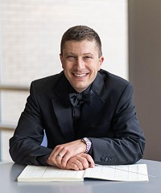

About the Music DirectorAaron S. Burgess is a dynamic conductor and music educator with close ties to the collegiate, public school, and community music arenas. He has been lauded for his exuberant and evocative performances and his collaborative approach to ensemble music making and administration. Mr. Burgess is lecturer of performance studies (conducting) and music education at Ithaca College were he serves as conductor of the acclaimed Ithaca College Trombone Troupe, teaches courses in instrumental music education, and supervises student teachers. Additionally, he is music director of the Ithaca Community Orchestra, music director designate of the Auburn Chamber Orchestra (NY), and resident conductor of the Ithaca New Music Collective. Mr. Burgess has collaborated from the podium with many artists and composers including trombonist Peter Steiner formerly of the Vienna Philharmonic Orchestra and Vienna State Opera, Timothy Smith of the Buffalo Philharmonic Orchestra, composers Dana Wilson, Sally Lamb McCune, Jess Langston Turner, Eric Ewazen, Lewis J. Buckley, Kenneth Fuchs and Joshua Oxford, alto saxophonist Greg Case of the U.S. Coast Guard Band, trumpeter Louis Hanzlik of the American Brass Quintet, flutist Barbara Hopkins of the Hartford (CT) Symphony Orchestra, and numerous faculty in the School of Music at Ithaca College. He has commissioned and premiered numerous new works for winds, strings, and percussion, guest conducted a wide array of ensembles and honor bands, and presented on topics pertaining to conducting and instrumental music education. His work in recent years includes appointments as director of bands in the Southern Cayuga Central Schools (NY) and 7/8 band director in the Trumansburg Central School District (NY) as well as numerous appearances with the wind bands of Ithaca College. From 2010 until 2015, he served as director of bands at Edwin O. Smith High School (CT). In 2014, he was appointed an adjunct faculty member in the Department of Music at the University of Connecticut where he taught woodwind methods and guest lectured on topics pertaining to secondary instrumental music education. During the summers of 2008 and 2009, he served as music director and conductor of the Connecticut Wind Ensemble, an ensemble comprised of professional and collegiate musicians. From 2007 until 2010, he was director of bands at Rocky Hill High School, Myrtle Stevens Elementary School, and West Hill Elementary School (CT). His work as a public school music educator includes ensemble and instrumental instruction at all grade levels, elective music courses, competitive marching band, and music program administration. Mr. Burgess is a member of several professional and honor organizations and has held numerous leadership roles in the Connecticut Music Educators Association including co-chair of the Connecticut All-State Festival. He holds a Master of Music in wind conducting from Ithaca College and a Bachelor of Arts in music and a Bachelor of Science in music education from the University of Connecticut. |